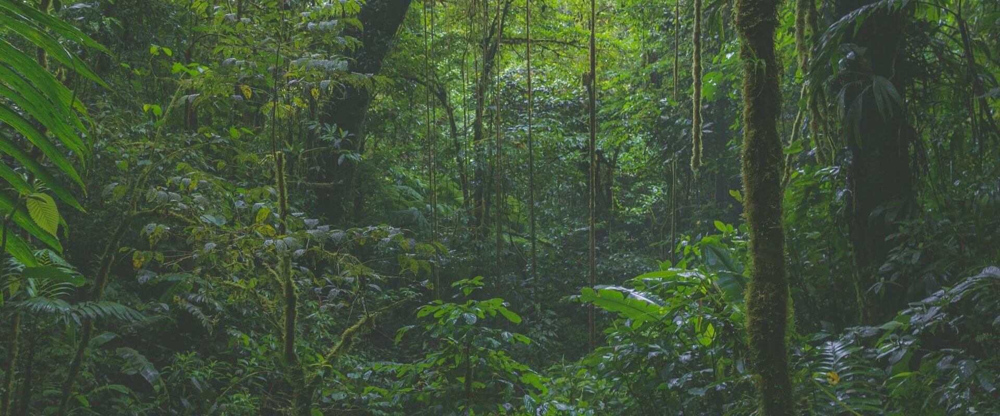
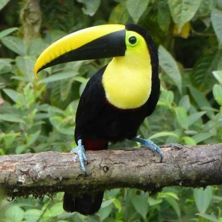

Descripción
El Bosque Protector Mindo-Nambillo es una reserva natural que abarca más de 19.000 hectáreas de bosque nublado. Es un ecosistema rico en biodiversidad, hogar de cientos de especies de aves, orquídeas, mamíferos e insectos. Su conservación es vital para proteger las cuencas hidrográficas locales y mantener el equilibrio ecológico de la región.
Ubicación Geográfica
Se extiende desde los 1.200 hasta los 3.600 metros sobre el nivel del mar, cubriendo zonas de los valles de Mindo y Nambillo, al noroeste de Quito.
Actividades para realizar
- Caminatas guiadas por los senderos del bosque
- Avistamiento de aves — ¡más de 500 especies registradas!
- Observación de orquídeas y plantas exóticas
- Fotografía de naturaleza y paisajes
- Aprender sobre conservación y ecología del bosque nublado
Galería de Imágenes


